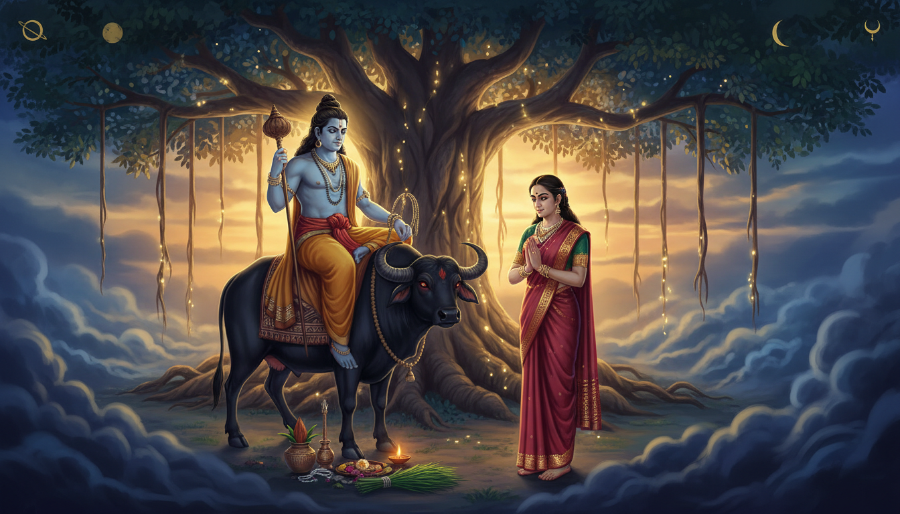

महाभारत सावित्री की कथा को केवल एक रोमांचक प्रेमकथा के रूप में नहीं बताता। यह कथा भय, विवाह, आयु, धैर्य, सेवा और दृढ़ संकल्प का अद्भुत मनोवैज्ञानिक चित्र है। सावित्री को पता है कि उनके पति सत्यवान की आयु केवल एक वर्ष है। फिर भी वे उन्हें अपना जीवनसाथी चुनती हैं। वे न घबराती हैं, न भागती हैं, न भाग्य से लड़ती हैं और न ही अपने धर्म को छोड़ती हैं। वे उस संकट के लिए तैयारी करती हैं जैसे योद्धा युद्ध के लिए तैयार होता है।

उनका हथियार तलवार नहीं, व्रत है।
जब यम स्वयं सत्यवान को ले जाने आते हैं, सावित्री उनका पीछा करती हैं। वे विनम्र रहती हैं, धैर्य नहीं छोड़तीं, और एक-एक करके पाँच वरदान माँगती हैं। यम जब तक इसका पूरा अर्थ समझते हैं, तब तक सत्यवान की दृष्टि, राज्य, कुल और प्राण सब लौट चुके होते हैं।
वैदिक घड़ी ऐप के उपयोगकर्ताओं के लिए यह कथा केवल पौराणिक मनोरंजन नहीं है। यह एक संपूर्ण उपाय-प्रणाली है। इसमें सत्य व्रत, वट सावित्री पूजा, यम साधना, शनि उपाय, आयुर्वेदिक वात संतुलन और अडिग दार्शनिक दृष्टि एक साथ मिलते हैं।
1. जिस राजकुमारी ने कठिन रास्ता चुना
सावित्री राजा अश्वपति की पुत्री हैं। वे सुंदर हैं, विदुषी हैं, गुणवती हैं और अनेक राजकुमारों की कामना का विषय हैं। लेकिन जब नारद जी चेताते हैं कि सत्यवान की आयु केवल एक वर्ष है, तब सावित्री उस भविष्यवाणी को हल्के में नहीं लेतीं।
वे फिर भी सत्यवान को चुनती हैं।
यही कथा का पहला रहस्य है: सत्य संकट से पहले चुना जाता है। सावित्री सुख-सुविधा के समय वादा नहीं करतीं, बल्कि खतरे को जानते हुए भी धर्म चुनती हैं। यही विकल्प उनके चमत्कार का आधार बनता है।
ज्योतिष की भाषा में यह ऐसा है जैसे सातवें भाव या आठवें भाव की किसी कठिन स्थिति को देखकर व्यक्ति भय नहीं, अनुशासन चुने। कुंडली में कोई कठिन संयोग दंड नहीं, पाठ्यक्रम होता है।
2. यम केवल मृत्यु नहीं, समय के नियम हैं
यम को अक्सर केवल मृत्यु का देवता कहा जाता है, लेकिन वैदिक चिंतन में वे बहुत अधिक व्यापक हैं। वे सीमा, समय, न्याय, संयम और उस क्षण के स्वामी हैं जब कोई निर्णय अपरिवर्तनीय हो जाता है।
इसलिए यम भय के नहीं, व्यवस्था के प्रतीक हैं। वे समय पर आते हैं, नियम का पालन करते हैं और सावित्री के धैर्य से प्रभावित होते हैं।
ज्योतिष में जब शनि, आठवाँ भाव या आयु से जुड़े संकेत दिखते हैं, तो संदेश यह नहीं होता कि हार जाओ। संदेश होता है:
- समय का सम्मान करो,
- शरीर की ऊर्जा बचाओ,
- टूटे वादे ठीक करो,
- नींद और भोजन को नियमित करो,
- सच्चाई चुनो।
सावित्री की यम पर विजय विधि के विरुद्ध विद्रोह नहीं है। यह प्रमाण है कि कर्म अनुशासित प्रेम के आगे झुक जाता है।
3. तीन रात्रि व्रत: संकट से पहले की तैयारी
सावित्री वन में अपने श्वशुर और सासुमाँ की सेवा करती हैं, सादा जीवन जीती हैं और नारद जी की चेतावनी को सदा याद रखती हैं। जब नियत समय निकट आता है, वे तीन रात्रि व्रत करती हैं। वे दिन-रात उपवास रखती हैं, इंद्रियों को वश में करती हैं और साधारण घबराहट में नहीं डूबतीं।
यही सत्य व्रत का केंद्र है।
सत्य का अर्थ केवल ईमानदारी नहीं है। इसका अर्थ है विचार, वाणी, वादा और कर्म में कोई अंतर न रह जाए। जब यह अंतर समाप्त हो जाता है, तब संकल्प अजेय हो जाता है।
आधुनिक भाषा में यह व्रत भूख नहीं, अनुशासन है:
- एक स्पष्ट वादा,
- एक निश्चित समय,
- एक मौन अभ्यास,
- एक सेवा-कार्य,
- एक सात्विक भोजन,
- और स्वयं से धोखा नहीं।
4. वट विजय: बरगद का प्रतीक
वट सावित्री पर्व बरगद की पूजा के माध्यम से सावित्री की स्मृति रखता है। यह संयोग नहीं है।
बरगद भारतीय परंपरा का सबसे शक्तिशाली आयु-प्रतीक है:
- इसकी शाखाओं से जड़ें नीचे आती हैं,
- यह तेज आँधी में भी टिकता है,
- यह सदियों जीता है,
- और छाया देता है।
जिस स्त्री के पति की आयु समाप्त होने वाली हो, बरगद उसके लिए जीवंत प्रार्थना बन जाता है: जीवन चलता रहे, कुटुंब चलता रहे, जड़ें मजबूत रहें।
वट सावित्री में स्त्रियाँ बरगद के चारों ओर प्रदक्षिणा करती हैं, जल अर्पित करती हैं, धागा बाँधती हैं और पति तथा परिवार की दीर्घायु की कामना करती हैं। आप अविवाहित हों या आपकी चिंता किसी और विषय की हो, यह अभ्यास फिर भी उपयोगी है। इसे अपने स्वास्थ्य, परिवार के किसी सदस्य के स्वास्य या किसी महत्वपूर्ण लक्ष्य की सुरक्षा के लिए भी कर सकते हैं।
5. पाँच वरदान और सावित्री का गूढ़ तर्क
जब यम सत्यवान के प्राण ले जाते हैं, सावित्री उनके पीछे चल पड़ती हैं। यम उन्हें लौटने को कहते हैं, लेकिन सावित्री विनम्रता और धर्म की भाषा बोलती हैं। वे रोती नहीं, चिल्लाती नहीं और भाग्य को दोषी नहीं ठहरातीं।
प्रभावित होकर यम वरदान देते हैं। सावित्री एक-एक करके माँगती हैं:
- श्वशुर की दृष्टि,
- खोया हुआ राज्य,
- पिता के लिए संतान,
- परिवार की सुरक्षा,
- और अंत में सत्यवान से संतान।
अंतिम वरदान देने के बाद यम स्वयं बंधे हो जाते हैं। सत्यवान के बिना संतान संभव नहीं, इसलिए उन्हें सत्यवान को जीवन देना पड़ता है।
यही कथा की गूढ़ सूक्ष्मता है। सावित्री भविष्य से लड़ती नहीं, बल्कि ऐसी शर्तें रचती हैं जिन्हें भविष्य को मानना पड़ता है। यही वट विजय का रहस्य है।
6. शनि, यम और आयु का ज्योतिष
उपायकारी ज्योतिष में यम का स्वाभाविक संबंध शनि से जोड़ा जाता है। शनि समय, सीमा, विलंब, धैर्य और कर्मफल के स्वामी हैं।
यदि आपकी कुंडली में शनि चंद्रमा पर दबाव देता हो, सातवें या आठवें भाव में कठिन संयोग हो, लग्नेश कमजोर हो, या विवाह और आयु से जुड़े ग्रह उपेक्षित हों, तो इसका अर्थ भय नहीं है। इसका अर्थ है स्थिरता।
शनि नाटकीयता नहीं, लय पसंद करते हैं। सावित्री का व्रत, सेवा, मौन और नियमित अनुशासन ठीक उसी भाषा में लिखा गया है।
व्यावहारिक स्तर पर आप यह कर सकते हैं:
- नींद नियमित करें,
- भोजन नियमित करें,
- शरीर की जाँच टालें नहीं,
- स्क्रीन और उत्तेजना कम करें,
- संबंधों में ईमानदारी बढ़ाएँ,
- जोखिम भरे शॉर्टकट से बचें।
7. आयुर्वेद: वात का संतुलन
सावित्री का संकट एक उत्तम वात संकट है। इसमें अलगाव का भय, अशांत मन, नींद की कमी, कमजोरी और भविष्य की अनिश्चितता प्रमुख हैं।
आयुर्वेद में वात हलचल, श्वास, तंत्रिका और चिंता को नियंत्रित करती है। जब वात बढ़ता है, तो अशांति, ठंड, अनियमित भूख और घबराहट बढ़ सकती है।
इसे शांत करने के लिए:
- गर्म और ताज़ा भोजन लें,
- योग्यता के अनुसार घी या तिल के तेल का थोड़ा प्रयोग करें,
- पैरों और सिर की हल्की मालिश करें,
- समय पर सोएँ,
- गहरी श्वास लें,
- कैफीन और बेचैनी बढ़ाने वाले दोष कम करें।
यदि आप रोगी हैं तो व्रत या जड़ी-बूटी किसी योग्य आयुर्वेदिक चिकित्सक की सलाह से ही करें। व्रत का उद्देश्य शरीर को कमजोर करना नहीं, मन को दृढ़ करना है।
8. कम प्रचलित सावित्री अनुष्ठान
1. वट सूत्र
बरगद के तने पर सरल सूती धागा इस संकल्प से बाँधें: मेरा वादा टूटे नहीं। धागा अपने आप में चमत्कार नहीं, बल्कि दृढ़ता का दैनिक अनुस्मारक है।
2. लाल वस्त्र अनुशासन
सावित्री वन में सादा वस्त्र और लाल रंग का उपयोग करती हैं। लाल रक्षा, जीवनी शक्ति और साहस का रंग है। व्रत के दिन इसे सादगी और अनुशासन के साथ धारण करें।
3. मौन अभ्यास
सूर्यास्त से पहले दैनिक 11 मिनट मौन रखें। यह शनि-यम साधना का सरलतम रूप है। इससे वाणी, नेत्र और तंत्रिका एक साथ शांत होती हैं।
4. जल और दर्भ
बरगद या पीपल की जड़ में जल चढ़ाएँ। यदि दर्भ उपलब्ध हो तो पूजा-स्थल पर रखें। यह अनुष्ठान जल, वृक्ष, श्वास और स्मृति को एक सूत्र में बाँधता है।
5. तिल दीप
शनिवार संध्या पर तिल के तेल का दीप जलाएँ और संकल्प करें: मेरा भय धैर्य में बदले। इसे आयु की गारंटी नहीं, समय के प्रति सम्मान समझें।
6. यम कवच अभ्यास
यम मंत्र साधारणतः योग्य मार्गदर्शन में ही करना उचित माना जाता है। सुरक्षित गृह-अभ्यास यह है: महामृत्युंजय या ओम नमः शिवाय का जप करें और एक मिनट शांत बैठकर सोचें, मैं समय से लड़ता नहीं, समय का सम्मान करता हूँ।
9. 41 दिन की सावित्री साधना
दिन 1 से 7: सत्य
- एक निश्चित संकल्प चुनें जिसे आप टाल रहे थे।
- सुबह एक निश्चित समय पर उठें।
- बरगद, पीपल या घर के पौधे को जल दें।
- ओम नमः शिवाय का 108 बार जप करें।
- रात में एक वाक्य में ईमानदार आत्म-समीक्षा लिखें।
दिन 8 से 14: धैर्य
- दैनिक 11 मिनट मौन रखें।
- फालतू बहस और निंदा से दूर रहें।
- गर्म भोजन नियमित समय पर लें।
- सोने से पहले पैरों की मालिश करें।
- अपनी क्षमता अनुसार अन्न या औषधि का दान करें।
दिन 15 से 21: सेवा
- किसी वृद्ध व्यक्ति या दंपति की सेवा करें।
- परिवार का एक टूटा संबंध सुधारें।
- सावित्री गायत्री का 27 बार जप करें।
- घर को साफ और व्यवस्थित रखें।
दिन 22 से 30: जीवनी शक्ति
- रात 11 बजे से पहले सोएँ।
- दैनिक 20 मिनट पैदल चलें।
- स्वास्थ्य जाँच टाल रहे हों तो उसे पूरा करें।
- चीनी, मद्य और धूम्रपान को घटाएँ।
- महामृत्युंजय का 11 या 108 बार जप करें।
दिन 31 से 40: संबंध
- प्रतिदिन अपने जीवनसाथी या प्रियजन को एक स्नेहपूर्ण वाक्य कहें।
- धारणा बनाने के बजाय पूछें, "आपको क्या चाहिए?"
- शनिवार को वृक्ष को जल अर्पित करें।
- अमावस्या पर सरल पितर स्मरण करें।
दिन 41: पूर्णाहुति
- प्रातः स्नान करें।
- स्वच्छ वस्त्र पहनें।
- घृष्ट या तिल का दीप जलाएँ।
- अपना मंत्र जपें।
- किसी को भोजन कराएँ।
- पूर्ण संकल्प वर्तमान काल में लिखें।
- कृतज्ञता के साथ अभ्यास समाप्त करें।
10. आधुनिक उपयोगकर्ताओं के लिए उपाय
- संबंध के भय पर: वफादारी, शिष्टाचार, स्वच्छता और सौंदर्य बढ़ाएँ।
- स्वास्थ्य की चिंता पर: वात शांत करने के लिए नींद, गर्म भोजन और श्वास ठीक करें।
- विलंब पर: शनि को घबराहट नहीं, नियमितता दें।
- शोक पर: आँसुओं को दबाएँ नहीं, भावनात्मक सहारा और अनुष्ठान दोनों रखें।
- विवाह स्थिरता पर: जीत दर्ज करने के बजाय सेवा चुनें।
- आयु पर: शरीर का दुरुपयोग बंद करें और समय का सम्मान करें।
- गूढ़ भय पर: रक्षा-अनुष्ठान करें, लेकिन अंधविश्वास को भोजन न दें।
11. निष्कर्ष: वह व्रत जिसने यम को झुकाया
सावित्री की विजय यह नहीं सिखाती कि मनुष्य मृत्यु को धोखा दे सकता है। वह और भी गहरी बात सिखाती है: भाग्य उस मन के आगे झुकता है जो सत्यवान, अनुशासित और प्रेमपूर्ण हो।
उन्होंने पहले से तैयारी की, व्रत किया, सेवा की, सुंदर बोले और जहाँ मौन शक्तिशाली था वहाँ मौन रहा। जब नियति पुराना निर्णय लागू करने आई, तब नया कर्म इतना दृढ़ हो चुका था कि उसे मानना पड़ा।
यदि आपकी कुंडली हानि, विलंब या कमजोर आयु का संकेत दे रही है, तो भय में मत डूबिए। सावित्री जैसा कीजिए।
संकट आने से पहले अपना सत्य चुनिए। उसे बरगद की तरह जड़ दीजिए। सेवा कीजिए। समय से आदरपूर्वक बात कीजिए। ऐसे सोइए जैसे जीना चाहते हैं और ऐसे प्रेम कीजिए जैसे धर्म छोड़ना संभव नहीं।
सावित्री आपको अटूट धैर्य दें। यम आपको समय का ज्ञान दें। शनि आपको सहनशक्ति दें। और आपके जीवन की हर कठिन भविष्यवाणी को उसी वन में मिलने वाली शक्ति मिले, जो सावित्री के सत्य और प्रेम के सामने झुक गई।
Sources
- The Mahabharata, Vana Parva, Section 293 - Sacred Texts
- The Mahabharata, Vana Parva, Section 294 - Sacred Texts
- Savitri and Satyavan - Wikipedia
- Vat Savitri Vrat Rituals - Drik Panchang
- Vat Savitri Vrat Festival - AstroSage
- Saturn in Vedic Astrology - AstroSage
- Venus in Vedic Astrology - AstroSage
- Yama in Vedic Mythology - Wikipedia
- Banyan Tree In Hindu Rituals - Wikipedia
- Ayurveda and Vata Balance - NCCIH
- Ashwagandha Overview - NCCIH
- Mahamrityunjaya Mantra - AstroSage
- Vat Savitri Vrat and Married Women Rituals - Drik Panchang
- Saturn Transit in Pisces 2026 - AstroSage
- Gayatri Mantra and Savitri Concept - AstroSage